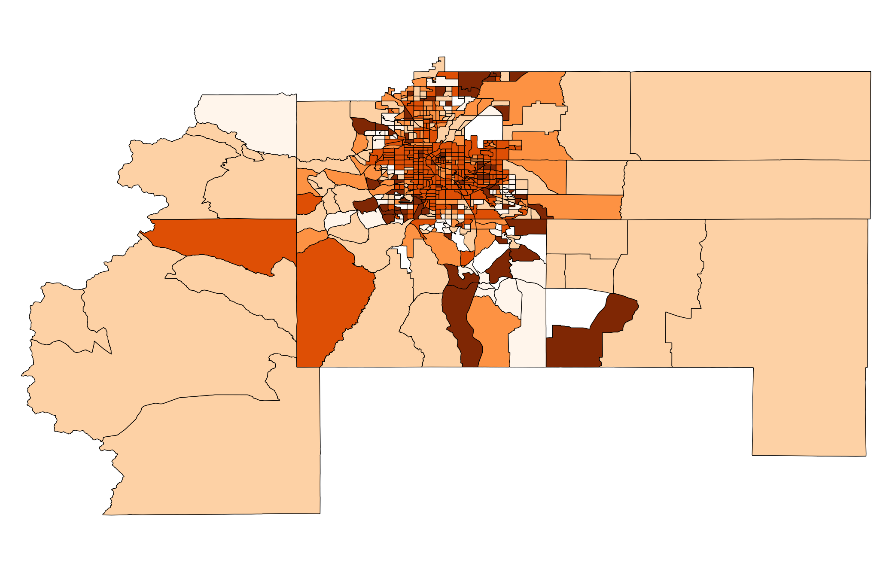

Work Samples
My expertise lies in the combination of my communication and analysis skills. I equally value my communication skills in person as much as those in written and visual, but the latter are easiest to convey in a web-based format so please scroll down for a sample of projects I have worked on.
Technical notes: I primarily use open-source tools for data analysis and visualization, namely Python (pandas, GeoPandas, SciPy, NumPy, Matplotlib, Bokeh, etc.), as well as R and QGIS. I also have experience integrating JavaScript tools for spatial and nonspatial data visualization such as Leaflet, OpenLayers, and D3. I can find my way around HTML and CSS code, and am a quick study when it comes to proprietary tools (ArcGIS, Carto, MapBox, Excel, Tableau, etc.).
Master's Thesis
In May 2017, I completed my master's thesis entitled "Bridging the Data-Theory Divide Using Regionalization and Uncertainty for Neighborhood Identification." My thesis addressed the intersection of theory-driven definitions of neighborhoods based on political, cultural, and physical attributes, and data-driven neighborhood identification based on demographic data from the American Community Survey.
Uncertainty in Census Data

Throughout graduate school I worked as a Research Assistant for Professor Seth Spielman, supporting his and collaborators' research addressing uncertainy in census data and measuring social vulnerabilty to natural hazards. I built a GitHub-based resource to house results from the research, which provided access to small-scale census data and maps with reduced uncertainty for researchers.
Demographic Analysis

Spatiotemporal Analysis

Target Market Analysis